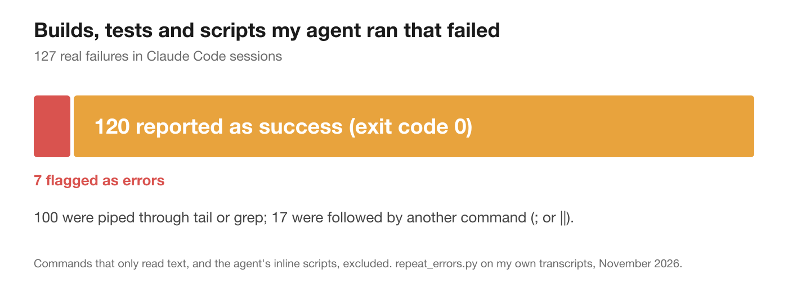
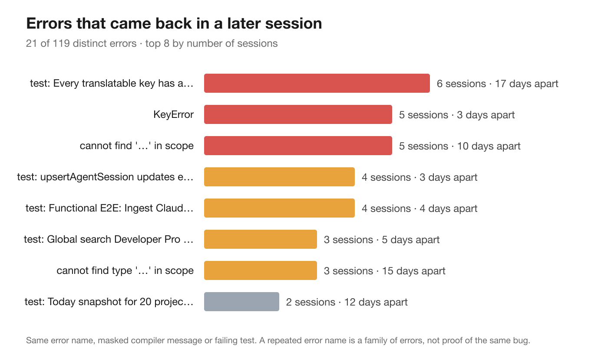

I counted the failures my coding agent hit over a month. One in six came back, and the old fix was always somewhere I couldn't search.
The app crashed while I was deleting rows quickly. EXC_BAD_ACCESS, with an address that looked like garbage. It took my coding agent and me a while to find: a popover with a hover delay, firing after its row had already been removed from the window. The fix was a couple of lines.
What bothered me afterwards was where that knowledge ended up. The diagnosis, the dead ends and the two-line fix were sitting in a conversation with my agent, somewhere in hundreds of thousands of tokens of transcript, under a session title that said nothing about crashes.
If that crash came back in a month, I knew exactly what would happen. I'd paste it into a fresh session, and the agent would start investigating from zero: reading the same files, forming the same hypotheses, trying the same things. It would get there in the end. It had got there last time too.
That's the strange part of working with coding agents. They produce an enormous, detailed record of how every bug was diagnosed and fixed, and almost none of it is findable when you need it.
Think about where the knowledge of a fix ends up today:
Each holds a piece. None of them can answer the only question you have when the error comes back: have I seen this before, and what fixed it?
I wanted to know whether errors really come back, or whether that's just a feeling. So I wrote a small script that goes through my own Claude Code transcripts and finds every build, test run and script the agent ran that really failed. Then it groups the failures by a stable signature (the error name such as KeyError or TS2307, the compiler message with names, paths and numbers masked out, or the name of the failing test) and checks which ones show up again in a later session.
Even that took two tries. My first version reported EXC_BAD_ACCESS in five sessions. None of them was a crash: every one was the agent reading a document or a file that happened to mention it. Error text in your history isn't always an error, so the script now ignores commands that only read text, and the agent's own throwaway inline scripts.
The first result surprised me more than the repeats did.

Of 127 real failures, 120 were reported as successes. The command exited 0, so the transcript marked it as fine. 100 of them were builds and test runs piped through tail or grep to keep the output short; most of the rest had another command after them. A pipeline's exit code is the exit code of its last command, and tail doesn't fail just because the build did. The same goes for xcodebuild test; echo done.
That matters for anything that tries to learn from your history. If you trust exit codes, you miss most of your failures, and worse, you can record a broken build as a passing one. (If you do this too, set -o pipefail makes the pipeline fail when any step fails. I now put it in front of every build command I give an agent, and in my own scripts.)
Then the repeats:

Of 119 distinct errors, 21 came back in a later session, about one in six. The gap between the first and last time was 10 days at the median and 27 at the longest. The most persistent was a single test, the one that checks every key has a translation, which failed in six different sessions over 17 days.
I want to be honest about what that does and doesn't show. A repeated error name is a family, not proof of the same bug. Five KeyErrors can be five different keys, and "cannot find '…' in scope" covers every missing name in Swift. But the families are exactly where an old fix is most useful: the cause is often the same shape even when the details differ. And a test that fails again is the clearest case of all: same name, same check, and very often the same fix.
You might think you could just grep for the error. I tried. Three things get in the way.
The error text changes every time. Line numbers move. Memory addresses are different on every crash. Temporary paths include random IDs. The same bug produces a different string each time it appears, so an exact search misses it and a loose search drowns you.
The fix isn't next to the error. In a transcript, the error is in a tool result, and the explanation of what caused it is in the agent's prose several turns later, often after two wrong guesses. Finding the error doesn't hand you the fix; you still have to read the whole investigation.
You can't tell a fix from a guess. Agents say "that should fix it" all the time. Some of those were fixes. Some were followed by the same error ten minutes later. Unless something recorded that a test actually passed afterwards, an old "fixed it" is a rumour.
I've spent the last few weeks building this into L2Cache, and the design came down to four rules. They apply whether you use a tool or not.
Strip what changes between occurrences: line and column numbers, hex addresses, paths. Keep what identifies the problem: exception names, error codes, test names, and the stable words of the message. Two crashes with different addresses should produce the same signature; a crash and a compiler error shouldn't.
The best time to capture a fix is right after it works, while the agent still has the whole investigation in context. So I ask the agent for it. When an error I recently copied is part of the context passed to the agent with my prompt, the prompt hook adds one instruction: if you fix this and a relevant test or build passes, end your reply with a short structured note. The note is an HTML comment, so it's invisible in the terminal:
<!-- L2CACHE_FIX: {"version":1,
"symptom":"short failure description",
"cause":"root cause",
"fix":"what changed",
"verification":"test or build result",
"files":["path/to/file"]} -->Symptom, cause, fix, how it was verified, and which files. No full error dump, no secrets. It costs the agent a few dozen tokens and turns a 200k-token investigation into five lines.
An agent's claim isn't evidence. A note is marked verified only when the same session shows a real test or build command (xcodebuild test, pytest, npm test, cargo test, swift test and so on) succeeding after the problem was raised and before the note. Everything else is kept as an unverified note and never presented as a confirmed fix.
Given what I found about exit codes, "succeeding" needs care. The first version of this rule trusted exit code 0, which meant a piped test run could verify a fix whose tests had failed. So now a test only counts when nothing after it can replace its result: it's the last command, or it's followed by &&. xcodebuild test | tail, pytest; echo done and cargo test || true don't verify anything, unless the command turns on pipefail. Fewer fixes get the badge, and the ones that do have earned it.
Agents run thousands of exploratory commands. grep exits 1 when it finds nothing. git diff exits 1 when there are differences. None of that is a bug worth remembering. A fix memory should anchor on things you actually cared about: an error you copied, a test that failed, a build that broke.
Capturing is half of it. The other half is retrieval, and there are two moments it matters.
When you hit the error. You copy the stack trace, as you always do. That's the moment to look it up: same signature in the same repository first, then shared error names, files or test names. Timing alone never counts as a match, and a weak match should stay quiet rather than interrupt you. In L2Cache this shows up as a small "Previously fixed" card next to the copied error, with only verified fixes, the command that proved them, and a link to open the original session.
When the agent hits it. Half the time it's the agent, not you, that runs into the error, deep in a task. So the same memory is exposed as a tool the agent can call (over MCP, for Claude Code and Codex), with an instruction it reads in the tool list: use this when you hit a build, test or runtime error, or before retrying an approach. It gets back the symptom, cause, fix, verification and files, verified results first, plus the session ID if it wants the full story. Instead of rediscovering the popover bug, it can read the five lines from last time.
A memory of fixes is tempting to over-automate, so I drew some hard lines. It never runs a suggested command for you; an old fix is evidence to read, not a script to replay. It never edits code or writes notes into your repository; the fix note lives in the transcript the agent was already writing. Nothing is sent to a cloud model or a server; matching is plain local ranking over your own history. And anything that looks like a secret, in the error, the note or the file list, is dropped rather than stored.
Those limits cost a little convenience. They're also why I'm comfortable letting it read every error I copy.
You don't need any of my tooling to get most of the benefit. Three steps:
1. Ask your agent to write fixes down. Add this to your project's CLAUDE.md (or AGENTS.md):
When you fix a bug and a relevant test or build passes afterwards, end
your reply with one line in this form:
FIX: <symptom> | cause: <root cause> | fix: <what changed> | verified by: <command>
Only write it after the test or build passes. No secrets, no full error text.
Run builds and tests with `set -o pipefail` so a failure is never hidden by a pipe.2. Search those notes when an error comes back. They live in your transcripts, so one command finds them all:
grep -rhoE 'FIX: [^"\\]{10,300}' ~/.claude/projects | grep -v 'FIX: <symptom' | sort -u3. Measure your own repeats. This is the script I used. It reads only your transcripts' structure and prints error names, masked compiler messages and failing test names, never your prompts or commands:
"""Repeat error report for Claude Code.
Scans your local transcripts (~/.claude/projects/*/*.jsonl) for builds, tests and
scripts the agent ran that really failed, and reports how often the same error
came back in a later session. Only error names, masked compiler messages and
test names are printed, never your messages or commands.
"""
import glob
import json
import os
import re
from collections import Counter, defaultdict
from datetime import datetime
# Programs that build, test or run code. A failure in their output is a real failure;
# the same text printed by cat, grep or sqlite3 is just something being read.
RUNNERS = {"xcodebuild", "swift", "swiftc", "python", "python3", "pytest", "node", "npm", "npx", "pnpm",
"yarn", "bun", "tsc", "cargo", "go", "make", "gradle", "mvn", "dotnet", "ruby", "rspec", "jest", "vitest"}
SKIP = {"cd", "env", "command", "rtk", "time", "timeout", "nice", "sudo", "exec"}
# What identifies an error, by kind. Each pattern's first group is the key.
SIGNATURES = [
re.compile(r"(?m)^(\w+(?:Error|Exception))\b(?::|$)"), # Python: last line of a traceback
re.compile(r"\berror (TS\d{4})\b"), # TypeScript
re.compile(r"(?m)^error\[(E\d{4})\]"), # Rust
re.compile(r"(?m)(?:Exception Type:\s+|Thread \d+: )(EXC_[A-Z_]+)"), # crashes
re.compile(r"(?m)^panic: (\w+)"), # Go
re.compile(r"(?m):\d+:\d+: (?:fatal )?error: (.{8,160})$"), # compilers (message is masked)
re.compile(r"✘ Test (?:\"[^\"]+\"|\w+\(\))"), # Swift Testing failures
re.compile(r"Test Case '-\[\S+ (\w+)\]' failed"), # XCTest failures
re.compile(r"(?m)^FAILED (\S+::\S+)"), # pytest failures
]
COMPILER = SIGNATURES[5]
FAILED_RUN = re.compile(r"\*\* (?:BUILD|TEST) FAILED \*\*|Traceback \(most recent call last\)")
def template(message):
"""cannot find 'fooBar' in scope -> cannot find '…' in scope"""
message = re.sub(r"(['\"`‘“]).*?(['\"`’”])", "'…'", message)
message = re.sub(r"(?:/[\w.@+-]+)+", "<path>", message)
message = re.sub(r"\b0x[0-9a-fA-F]+\b|\b\d+\b", "N", message)
return re.sub(r"\s+", " ", message).strip()[:60]
def segments(command):
"""Each piece of a shell command with what follows it: 'end', '&&', '|' or 'other' (; || &)."""
parts = re.split(r"(\|\||&&|\|&?|;|(?<![<>])&(?![>&])|\n)", command)
out = []
for text, sep in zip(parts[::2], parts[1::2] + [None]):
follower = "end" if sep is None else "&&" if sep == "&&" else "|" if sep.startswith("|") and sep != "||" else "other"
words = [w for w in text.split() if "=" not in w.split("/")[0]]
while words and (os.path.basename(words[0]) in SKIP or words[0].isdigit()):
words.pop(0)
if words:
out.append((os.path.basename(words[0]), follower))
return out
def text_of(block):
content = block.get("content")
if isinstance(content, list):
return " ".join(c.get("text", "") for c in content if isinstance(c, dict))
return content if isinstance(content, str) else ""
def main():
seen = defaultdict(list) # error -> [(when, session)]
failures, hidden, masked_by = 0, 0, Counter()
for path in glob.glob(os.path.expanduser("~/.claude/projects/*/*.jsonl")):
session = os.path.basename(path)[:8]
commands, done = {}, set()
for line in open(path):
try:
row = json.loads(line)
except json.JSONDecodeError:
continue
content = (row.get("message") or {}).get("content")
if not isinstance(content, list):
continue
for block in content:
if not isinstance(block, dict):
continue
if block.get("type") == "tool_use" and block.get("name") == "Bash":
command = str((block.get("input") or {}).get("command", ""))
# Inline scripts (python3 - <<EOF, python3 -c) are the agent's own throwaway tooling:
# their tracebacks are slips in the script, not errors in your project.
inline = re.search(r"\bpython3? +(?:-c\b|-\s|-<<)", command)
commands[block.get("id")] = [s for s in segments(command) if not (inline and s[0].startswith("python"))]
continue
use_id = block.get("tool_use_id")
if block.get("type") != "tool_result" or use_id not in commands or use_id in done:
continue
runs = [(exe, follower) for exe, follower in commands[use_id] if exe in RUNNERS]
if not runs:
continue # nothing was built, tested or run: any error text was only being read
body = text_of(block)[:50_000]
keys = set()
for pattern in SIGNATURES:
for match in pattern.finditer(body):
found = match.group(1) if pattern.groups else match.group(0)
keys.add(template(found) if pattern is COMPILER else found[:60])
if not keys and not FAILED_RUN.search(body):
continue
done.add(use_id)
failures += 1
if not block.get("is_error"):
hidden += 1
masked_by[next((f for _, f in runs if f != "end"), "end")] += 1
when = datetime.fromisoformat(row["timestamp"].replace("Z", "+00:00")).astimezone()
for key in keys:
seen[key].append((when, session))
repeats = {}
for key, hits in seen.items():
sessions = {s for _, s in hits}
if len(sessions) >= 2:
days = (max(w for w, _ in hits) - min(w for w, _ in hits)).days
repeats[key] = (len(sessions), len(hits), days)
labels = {"|": "piped into another command", "other": "followed by ; || or &", "&&": "followed by &&", "end": "last command, still exit 0"}
print("REPEAT ERROR REPORT (Claude Code transcripts)")
print("=" * 72)
print(f"Builds, tests and scripts that failed: {failures}")
print(f" ...reported as success (exit 0): {hidden}")
for follower, n in masked_by.most_common():
print(f" {labels[follower]:<31}{n:>4}")
print(f"Distinct errors: {len(seen)}")
print(f"Came back in a later session: {len(repeats)}")
if repeats:
spans = sorted(d for _, _, d in repeats.values())
print(f"Days between first and last time: median {spans[len(spans) // 2]}, longest {spans[-1]}")
print("\nMOST REPEATED")
for key, (n_sessions, n_hits, days) in sorted(repeats.items(), key=lambda kv: (-kv[1][0], -kv[1][1]))[:8]:
print(f" {key:<60} {n_sessions:>2} sessions {n_hits:>3}x {days:>2} days")
if __name__ == "__main__":
main()Save it as repeat_errors.py and run python3 repeat_errors.py. Here's mine:
REPEAT ERROR REPORT (Claude Code transcripts)
========================================================================
Builds, tests and scripts that failed: 127
...reported as success (exit 0): 120
piped into another command 100
followed by ; || or & 17
followed by && 3
Distinct errors: 119
Came back in a later session: 21
Days between first and last time: median 10, longest 27
MOST REPEATED
✘ Test "Every translatable key has a translation in every la 6 sessions 12x 17 days
KeyError 5 sessions 5x 3 days
cannot find '…' in scope 5 sessions 5x 10 days
✘ Test "upsertAgentSession updates existing session preservi 4 sessions 6x 3 days
✘ Test "Functional E2E: Ingest Claude & Codex JSONL -> Datab 4 sessions 6x 4 days
✘ Test "Global search Developer Pro gating" 3 sessions 4x 5 days
cannot find type '…' in scope 3 sessions 3x 15 days
✘ Test "Today snapshot for 20 projects, 3,000 session-days a 2 sessions 7x 12 daysIf your "reported as success" line is high too, start with pipefail. If your repeats are high, start writing fixes down.
Your agent already did the hard work of finding the fix. The waste is doing it twice.
Capture the fix at the moment it's verified, keep it short, call it verified only when a test proves it, and look it up the moment the error comes back. Whether that's a grep over your own FIX notes or a tool that does it for you, the second time should take seconds, not another investigation.
More on how coding agents can use your own history as memory: Coding agent memory with MCP and hooks. And on keeping and searching Claude Code sessions on your Mac: Claude Code session history on Mac.
L2Cache remembers what fixed what, and shows verified fixes when the error comes back.
Download L2Cache for Mac